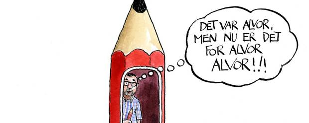
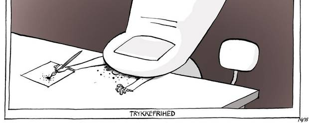

12 människor dog i sambandet med attentatet på redaktionen på Charlie Hebro
Je suis Jyllansds-Posten ?
Attentatet mot Charlie Hebdo var en attack mot tidskriften Charlie Hebdo i Paris den 7 januari 2015 med tolv döda och elva skadade.
Bland offren fanns de fem satirtecknarna Cabu, Charb, Tignous, Honoré och Wolinski samt två poliser.
Man kan ikke solidarisere sig med Charlie Hebdo i dag uden at være solidarisk med Jyllands-Postens tegnere, skriver formanden for Dansk PEN i dette læserbrev.

Hør lige engang: Der er ingen forskel på Charlie Hebdo og Jyllands-Posten. Og der bør ikke være forskel på vores andres reaktion.
Nogle af de tegninger, de to blade har trykt, har været skarpe og sjove. Nogle har hverken været skarpe eller sjove. Og måske har flere tegninger været krænkende for nogle, mens andre tegninger har været ligegyldige.
Men ingen af tegningerne kan retfærdiggøre mord. Og set i bakspejlet er det skræmmende, at Jyllands-Postens såkaldte Mohammed-tegninger kunne udløse en næsten verdensomspændende krise for otte år siden. Omkring 150 mennesker døde i forbindelse med striden dengang.
Og der er stadig mennesker, som mener, at Jyllands-Posten hellere skulle have ladet være at trykke profet-tegningerne. Der er også mennesker, som antyder, at Jyllands-Posten selv var ude om balladen.
Så skulle Charlie Hebdo også have ladet være.
Betyder det, at Charlie Hebdo selv var ude om mordet på 12 mennesker?
Man kan ikke solidarisere sig med Charlie Hebdo i dag uden at være solidarisk med Jyllands-Postens tegnere. Og hvis man bebrejdede Jyllands-Posten den såkaldte tegninge-aktion i vinteren 2005/6 giver det ingen mening at rende rundt med et 'Je suis Charlie Hebdo' i dag.
Indblik 07.01.2015
Fra venstre: Den indiske forfatter Salman Rushdie, afbrænding af Dannebrog i Pakistan under Muhammedkrisen, Philippe Val, tidligere chefredaktør på Charlie Hebdo, Theo van Gogh, myrdet filminstruktør, og Ayaan Hirsi Ali, forfulgt islamkritiker.
Fotos: AP
Hvilken civilisation er vi?
Analyse: Efter massemordet i Paris stilles Europa med fornyet styrke over for det multikulturelle demokratis dilemma. Hvis vi skal overleve som civilisation, er vi nødt til at insistere på retten til at krænke, ellers ender vi i tavshedens tyranni, skriver Flemming Rose.

Ikke fordi alle tegningerne har været nogen guds gave til menneskeheden. Men det er ikke tegningerne, som skaber blodbadet – dét gør kun de voldsmænd, som tillader sig at gribe til våben i vrede, krænkelse eller fornærmelse over tegningerne.
Oplevelsen af krænkelse kan være ægte. Men det gør ikke volden legitim. Ikke i dag og ikke dengang efter Jyllands-Posten.
Derfor er Jyllands-Posten i betydelig udstrækning blevet svigtet. Ikke fordi der har været demonstrationer imod avisens tegninger. De hører med til den debat, som tegningerne vil skabe. Men Jyllands-Posten blev svigtet, fordi der ikke altid var solid opbakning til tegnerne. Måske troede mange ikke, at tegnerne reelt var truet. I dag ved vi, om ikke for længst, at det er løgn.
Hvis de danske tegninger hyppigt blev indlæst i en forbitret integrationsdebat, var det vel ikke forkert. Det er næppe heller forkert, at Jyllands-Posten – berettiget eller uberettiget – havde ry for at høre til kritikerne af en blød integrationspolitik. Derfor blev tegningerne af mange, også af mange muslimer, set som uvenlige.
SE OGSÅ TV: Flemming Rose: “Det løber én koldt ned ad ryggen”
Men uanset, om det var éns synspunkt, var der vitterligt en journalistisk anledning til at bringe tegningerne i Jyllands-Posten. En forfatter havde haft svært ved at finde en tegner, som ville illustrere en bog om profeten. Der havde været voldelige overgreb og trusler mod flere kulturfolk på grund af deres arbejde med nogle religiøse dogmer.
Avisen ville teste, om der var berøringsangst og trusler i luften. Resultatet blev de 12 tegninger i avisen 30. september 2005. Nogle kunne lide dem, andre ikke. Men i Danmark afholdt både kritikere og tilhængere sig fra vold. På den led klarede Danmark umiddelbart sin egen test af demokratiet.
Men senere kom både trusler og vold til Danmark. Een af tegnerne blev overfaldet med en økse i sit hjem. En af Jyllands-Postens redaktører var blevet bombe-angrebet, hvis en attentatmand ikke havde forkludret det i et hotels kælder.
Og hvis politiet ikke have været dygtigt og måske heldigt, var Jyllands-Posten blevet ramt af en vold ligesom den, der kostede over 150 mennesker livet i Mumbai, eller 12 mennesker livet som forleden på Charlie Hebdo.
Hvor er T-shirts med 'Je Suis Jyllands-Posten'?
Sagen er, om vi gerne vil leve i et land med frihed til politiske bladtegninger eller i et land, hvor der ikke er frihed til politiske bladtegninger?
Det ændrer ikke, at bladtegnere med fordel – med den britiske satiriker Martin Rowsons ord – kan gå efter folk med mere magt end én selv og ikke træder på mindretal bare for at træde på dem.
LÆS OGSÅ »Der mangler nogle tegninger i vores dækning«
Den politiske bladtegnings kerne er den satire, der går efter politiske, religiøse, økonomiske, militære – og måske andre – magthavere. Som udstiller hykleri. Som afslører forskel på løfter og handlinger. Som afdækker amoral. Og stiller magthavere af enhver art til ansvar.
Nogle bladtegninger vil være gode. Andre vil være dårlige.
Men ikke engang de dårlige tegninger retfærdiggør vold.
Vor tids held er, at nyheder og tegninger kan spredes med lynets hast. Det er også vores uheld. Tegninger, der er forankret i en kultur og én moral, kan med lynets hast læses på nettet i andre kulturer, hvor de kan fortolkes på anden vis og også misfortolkes.
LÆS OGSÅ TV: Derfor bringer JP ikke Charlie Hebdo-tegninger
Herhjemme fører det til fejlslutningen, at det er en konflikt mellem kristenheden og den muslimske verden. Forkert.
Verden har mildt sagt flere kulturer og religioner. Og det er plat umuligt at forvente, at bladtegnere i ethvert land og til enhver tid skal tage hensyn til alverdens religioner og tabuer. Så dør tegningerne. Og ytringsfrihed bliver et abstrakt begreb. Tegnere ude i alverdens kulturer vil heller ikke lade deres værker begrænse af hensyn til sære danske ønsker oppe i Nord.
Konflikten står et andet sted – mellem det åbne samfund og det lukkede. Mellem det autoritære og det demokratiske. Mellem frihed og ufrihed.
Sådan gælder det for kristne og for muslimer og for ateister og alle andre. Dem, der tror, har ikke mere ret – eller ret til flere hensyn – end folk, der ikke tror eller tror lidt mindre eller lidt skævt.
Vores frihed trives, men ja -- som vi lige har set i Paris, er vi truet af voldsmænd. Men mange samfund er mere truet af vi, og næppe nogen er ligeså truet som de samfund, hvor Charlie Hebdo-morderne havde deres inspiration. Over hele Mellemøsten bliver politiske bladtegnere censureret og truet.
SE OGSÅ TV: Jørn Mikkelsen: "Vi svigter ikke Charlie Hebdo"
Men i Mellemøsten handler det heller ikke om kristne og muslimer, om også dér netop om konflikten mellem det lukkede samfund og håbet om det åbne. Mellem det autoritære og håbet om demokratisering. Mellem ufrihed i dag og håbet om frihed i morgen.
Det fordrer solidaritet med Charlie Hebdo og undertrykte bladtegnere ude i verden. Men det fordrer også solidaritet med tegnerne i Jyllands-Posten.
Ikke fordi JP's tegninger nødvendigvis er pragtfulde. Og slet ikke fordi vi skal undlade at diskutere dem og kritisere dem, ligesom de kan kritisere os. Men fordi alternativet til frie tegninger er værre.
Alternativet viste sit hæslige ansigt i Paris. Der er al grund til at frygte det i Danmark.
Jyllandsposten Debattinlägg Anders Jerichow, formand for dansk PEN